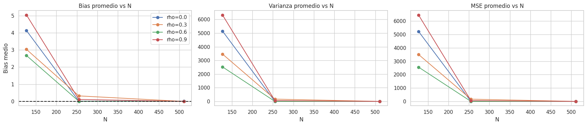

7. Simulación Monte Carlo#
En esta seccion se evaluara la estabilidad de los estimadores mediante simulaciones.
7.1. Importacion de librerias#
# Librerías científicas básicas
import numpy as np
import pandas as pd
import scipy.stats as stats
# Visualización
import matplotlib.pyplot as plt
import seaborn as sns
# Modelos estadísticos
import statsmodels.api as sm
from statsmodels.stats.outliers_influence import variance_inflation_factor
from statsmodels.api import OLS, add_constant
from sklearn.linear_model import Ridge, Lasso, ElasticNet
from sklearn.metrics import r2_score, mean_squared_error, mean_absolute_error
# Machine Learning
from sklearn.model_selection import train_test_split
from sklearn.feature_selection import RFE
from sklearn.linear_model import LinearRegression
7.2. Lectura de datos#
df = pd.read_csv("../data/day_clean.csv", sep =";")
# df ordenado
N = len(df)
cut = int(N * 0.7)
train = df.iloc[:cut].copy()
test = df.iloc[cut:].copy()
print("tamaño set de entrenamiento:", train.shape)
print("tamaño set de prueba:", test.shape)
# 1. Subdivisión del conjunto de entrenamiento
X_train = train[['yr', 'temp', 'hum', 'windspeed', 'season_2', 'season_3', 'season_4',
'weathersit_2', 'weathersit_3', 'holiday_1']]
y_train = train['cnt']
tamaño set de entrenamiento: (511, 17)
tamaño set de prueba: (220, 17)
np.random.seed(42)
# MONTE CARLO ADAPTADO A OLS (statsmodels)
import pickle
from statsmodels.stats.diagnostic import acorr_ljungbox
# 1. Cargar el modelo OLS desde pickle
with open("../models/ols_model.pkl", "rb") as f:
ols_model = pickle.load(f)
# 2. Usa las mismas variables EXACTAS con las que entrenaste
X_base = X_train.copy().values # <- sin escalar
y_base = y_train.copy().values
n, k = X_base.shape
# 3. Extraer coeficientes del modelo OLS
ols_params = ols_model.params.values
ols_intercept = ols_params[0] # primer valor = intercepto
ols_betas = ols_params[1:] # resto = coeficientes
# 4. Parámetros Monte Carlo
B = 500
rhos = [0.0, 0.3, 0.6, 0.9]
Ns = [n//4, n//2, n]
sigma_eps = 1.0
# Función AR(1)
def simulate_ar1_errors(N, rho, sigma):
eps = np.random.normal(0, sigma, size=N)
u = np.zeros(N)
for t in range(1, N):
u[t] = rho * u[t-1] + eps[t]
return u
# Resultados
results = []
for rho in rhos:
for N in Ns:
betas_hat = np.zeros((B, k))
for b in range(B):
# 1) Resample de filas reales
idx = np.random.choice(np.arange(n), size=N, replace=True)
X_sim = X_base[idx, :]
# 2) Errores AR(1)
u = simulate_ar1_errors(N, rho, sigma_eps)
# 3) Y simulado usando el verdadero modelo OLS
y_sim = ols_intercept + X_sim @ ols_betas + u
# 4) Estimación OLS (usamos sklearn para rapidez)
model = LinearRegression().fit(X_sim, y_sim)
betas_hat[b, :] = model.coef_
# Métricas Monte Carlo
bias = betas_hat.mean(axis=0) - ols_betas
var = betas_hat.var(axis=0, ddof=1)
mse = np.mean((betas_hat - ols_betas)**2, axis=0)
results.append({
"rho": rho,
"N": N,
"bias_mean": bias.mean(),
"var_mean": var.mean(),
"mse_mean": mse.mean(),
})
# DataFrame final
df_res = pd.DataFrame(results)
# Gráficas
sns.set(style="whitegrid")
fig, axes = plt.subplots(1, 3, figsize=(18,4), sharex=True)
for rho in rhos:
df_plot = df_res[df_res["rho"] == rho].sort_values("N")
axes[0].plot(df_plot["N"], df_plot["bias_mean"], marker='o', label=f"rho={rho}")
axes[1].plot(df_plot["N"], df_plot["var_mean"], marker='o', label=f"rho={rho}")
axes[2].plot(df_plot["N"], df_plot["mse_mean"], marker='o', label=f"rho={rho}")
axes[0].axhline(0, color="k", linestyle="--")
axes[0].set_title("Bias promedio vs N")
axes[0].set_xlabel("N")
axes[0].set_ylabel("Bias medio")
axes[1].set_title("Varianza promedio vs N")
axes[1].set_xlabel("N")
axes[2].set_title("MSE promedio vs N")
axes[2].set_xlabel("N")
axes[0].legend()
plt.tight_layout()
plt.show()

Más datos (mayor N)se refleja en mejores estimaciones (menos bias, varianza y MSE).
La autocorrelación en los errores (m) afecta las métricas, pero no siempre de forma negativa.
El modelo OLS sigue siendo robusto en muchos escenarios, aunque no esté diseñado para errores autocorrelacionados.